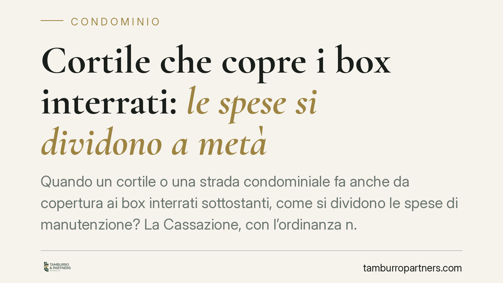

Cortile che copre i box interrati: le spese si dividono a metà
Quando un cortile o una strada condominiale fa anche da copertura ai box interrati sottostanti, come si dividono le spese di manutenzione? La Cassazione, con l'ordinanza n. 16890 del 2025, sceglie la regola più netta: ripartizione al 50% tra chi sta sopra e chi sta sotto. Resta esclusa la formula del lastrico solare. Una pronuncia che incide su molti supercondomìni con autorimesse interrate.

Il caso deciso dalla Cassazione
La controversia riguarda una situazione frequente nei complessi residenziali di recente costruzione: un cortile (o una strada interna carrabile) che, oltre a servire i condomini per il passaggio e la sosta, costituisce al tempo stesso il "tetto" dei box auto collocati al piano interrato.
La domanda è semplice solo in apparenza: le spese per riparare o rifare la pavimentazione e la relativa impermeabilizzazione gravano su tutti i condomini o solo su alcuni? E in quale proporzione?
La Seconda Sezione civile, con l'ordinanza n. 16890 del 24 giugno 2025, ha fissato un principio chiaro. Quel cortile ha una doppia natura: è superficie di calpestio per chi lo usa sopra ed è al contempo elemento di copertura e protezione dei locali sottostanti. Per questa ragione si applica l'articolo 1125 del Codice civile, con ripartizione in parti uguali: metà a carico dei proprietari dei box interrati, metà a carico di chi utilizza la superficie superiore.
Inquadramento normativo
Il Codice civile offre più criteri di riparto e la scelta non è indifferente.
L'articolo 1125 c.c. disciplina le spese per i solai e i soffitti che fungono da confine tra due piani sovrapposti: in questo caso le spese sono sostenute in parti uguali dai proprietari dei due piani, salvo che per la pavimentazione (a carico del piano superiore) e per l'intonaco del soffitto (a carico del piano inferiore). La logica è quella del "bene di confine" che separa e serve due unità a vantaggio comune.
L'articolo 1126 c.c. regola invece i lastrici solari a uso esclusivo: chi ne ha l'uso paga un terzo, i condomini sotto i quali il lastrico si estende pagano i restanti due terzi. È il criterio applicato quando sopra c'è un uso esclusivo e sotto una pluralità di unità protette.
La Cassazione ha escluso l'articolo 1126. Il cortile-copertura non è un lastrico a uso esclusivo di un singolo: è una superficie comune che svolge, nei confronti dei box sottostanti, la stessa funzione di un solaio divisorio. Da qui l'applicazione della regola paritaria dell'articolo 1125, e non di quella frazionata un terzo/due terzi.
Resta sullo sfondo l'articolo 1123 c.c., criterio generale di riparto proporzionale ai millesimi o all'uso, che qui cede il passo alla norma speciale sul bene di confine.
Cosa cambia in concreto
La pronuncia ha ricadute dirette su supercondomìni e complessi con autorimesse interrate.
Per i proprietari dei box, la metà delle spese di manutenzione straordinaria del cortile sovrastante diventa un onere strutturale: la copertura che protegge l'autorimessa è, a tutti gli effetti, parte del loro perimetro di responsabilità.
Per i condomini che usano la superficie superiore, il principio evita di scaricare l'intero costo su chi sta sopra e distribuisce l'onere secondo la funzione protettiva del manufatto.
Per gli amministratori, cambia il modo di impostare i piani di riparto e le delibere di spesa. Applicare erroneamente il criterio del lastrico solare (un terzo/due terzi) espone la delibera a impugnazione per violazione dei criteri di legge.
Attenzione a un punto: la ripartizione al 50% riguarda le spese che attengono alla natura di copertura del manufatto, cioè struttura e impermeabilizzazione. Resta a carico di chi usa la superficie superiore la sola pavimentazione, coerentemente con la seconda parte dell'articolo 1125.
Cosa fare in concreto
- Verificate i titoli e i regolamenti. Controllate se l'atto di acquisto o il regolamento contrattuale già disciplinano il riparto: una clausola valida può derogare al criterio legale.
- Riclassificate la spesa. Prima di deliberare, distinguete tra interventi sulla struttura-copertura (50%/50%) e interventi sulla sola pavimentazione (a carico del piano superiore).
- Rivedete le tabelle in uso. Se finora avete applicato il criterio del lastrico solare, segnalate la questione all'assemblea per allineare i futuri riparti.
- Documentate la natura del manufatto. Perizie e relazioni tecniche che attestino la funzione di copertura del cortile rafforzano la correttezza della delibera.
- Valutate le spese già ripartite. Per gli interventi deliberati di recente con criterio errato, consigliamo di verificare i termini e le possibilità di contestazione.
Disclaimer
Contributo informativo a cura di Tamburro & Partners - Avv. Giuseppe Tamburro. Non costituisce parere legale.
Ogni condominio ha una storia a sé.
Se gestisci un'amministrazione e vuoi un confronto su una specifica questione condominiale, scrivi allo studio. Ti rispondiamo entro un giorno lavorativo.